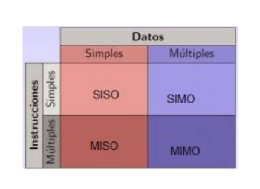
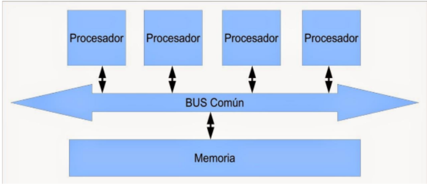
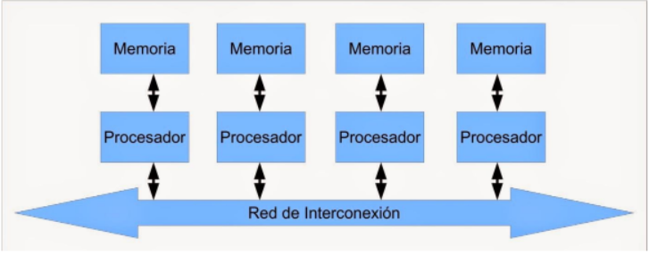
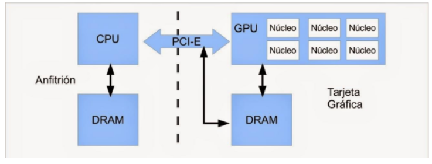

Arquitectura de Multiprocesamiento. Se denomina multiprocesador a un computador que cuenta con dos o más microprocesadores (CPUs). El multiprocesador puede ejecutar simultáneamente varios hilos pertenecientes a un mismo proceso o bien a procesos diferentes. La arquitectura NUMA, donde cada procesador tiene acceso y control exclusivo a una parte de la memoria. La arquitectura SMP, donde todos los procesadores comparten toda la memoria. Para que un multiprocesador opere correctamente necesita un sistema operativo especialmente diseñado para ello. La mayoría de los sistemas operativos actuales poseen esta capacidad. Cuando se desea incrementar el desempeño más de lo que permite la técnica de segmentación (pipeline), se requiere utilizar más de un procesador para la ejecución del programa de aplicación. Los CPU de multiprocesamiento según Flynn se clasifican de la siguiente manera: SISO - (Single Instruction, Single Operand) computadoras Monoprocesador SIMO - (Single Instruction, Multiple Operand) procesadores vectoriales, Exenciones MMX MISO - (Multiple Instruction, Single Operand) No implementado MIMO - (Multiple Instruction, Multiple Operand) sistemas SMP, Clusters, GPUs
Los procesadores vectoriales, son computadoras pensadas para aplicar un mismo algoritmo numérico a una serie de datos matriciales, en especial en la simulación de sistemas físicos complejos, tales como simuladores de clima, explosiones atómicas, reacciones químicas, etc. Donde los datos son representados como grandes números de datos en forma matricial sobre los que se deben se aplicar el mismo algoritmo numérico. La mayoría de los procesadores modernos incluye algunas instrucciones de tipo vectorial, tales como las extensiones al conjunto de instrucciones tales como MMX y SSE. Estas instrucciones les permiten procesar flujos multimedia más eficientemente. Los Procesadores Digitales de Señales (DSP), son procesadores especializados en el procesamiento de señales tales como audio, vídeo, radar, sonar, radio, etc. Cuentan con instrucciones tipo vectorial que los hace muy aptos para dicha aplicación. Suelen utilizarse en conjunto con un microcontrolador en dispositivos como reproductores de audio, reproductores de DVD y Blueray, teléfonos celulares, sistemas de entretenimiento, sistemas de adquisición de datos, instrumentos médicos, controles industriales, etc. En los sistemas SMP (Simetric Multiprocessing), varios procesadores comparten la misma memoria principal y periféricos de Entrada /Salida, normalmente conectados por un bus común. Se conocen como simétricos, ya que ningún procesador toma el papel de maestro y los demás de esclavos, sino que todos tienen derechos similares en cuanto al acceso a la memoria y periféricos y ambos son administrados por el sistema operativo. Pueden formarse con varios núcleos en un solo circuito integrado o con varios circuitos integrados en una misma tarjeta madre. La primera opción ha sido popularizada al hacerse más económicos los procesadores multinúcleo de los principales fabricantes y con su uso en sistemas de gama media y baja, e inclusive en teléfonos celulares y tabletas. La segunda opción fue la que se uso en un principio y sigue siendo usada en en estaciones de trabajo y en servidores de alto rendimiento debido a que incrementa el poder computacional del sistema, pero también incrementa considerablemente el costo del sistema.
Clusters Conjuntos de computadoras independientes conectadas en una red de área local o por un bus de interconexión y que trabajan cooperativamente. Con un sistema de procesamiento paralelo o distribuido. Consta de un conjunto de computadoras independientes, interconectadas entre sí, de tal manera que funcionan como un solo recurso computacional. Es clave en su funcionamiento contar con un sistema operativo y programas de aplicación capaces de distribuir el trabajo entre las computadoras de la red. Este tipo de computadora paralela se ha vuelto muy popular por que permite usar los avances en los procesadores comerciales que tienen una muy buena relación costo rendimiento y se puede incorporar rápidamente los avances que proporciona las nuevas tecnologías en cuanto es económicamente viable. Sin embargo, se debe tener cuidado al implementar la aplicación, ya que si los datos que hay que pasar de un procesador a otro son demasiados, el tiempo empleado en pasar información de un nodo a otro puede sobrepasar a la ganancia que se tiene al dividir el trabajo entre varios procesadores.
Procesadores Gráficos (Graphics Processing Unit GPU) Sistemas diseñados originalmente para el procesamiento de gráficos, con múltiples procesadores vectoriales sencillos compartiendo la misma memoria. La cual también puede ser accedida por el CPU. Por la gran cantidad de núcleos con los que cuenta, logran un excelente desempeño al ejecutar algoritmos que se adaptan a ser paralelizados, a tal grado que muchas de las supercomputadoras más rápidas de la actualidad utilizan estos procesadores, y los fabricantes de tarjetas gráficas producen versiones de sus productos especializadas en acelerar los cálculos de propósito general.
